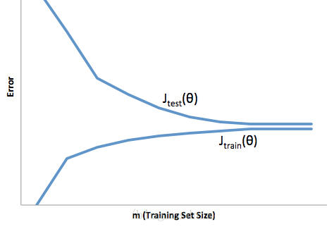

第 46 题
你训练一个学习算法，发现它在测试集上的误差很高。绘制学习曲线，并获得下图。算法是否存在高偏差、高方差或两者都不存在？

查看答案与解析
答案 A
样本规模增大后，两条误差曲线收敛得接近。题干又给出测试误差仍高，因此训练误差也相近并偏高，是高偏差。典型高方差表现为训练误差低、验证误差高，差距持续较大。
题册勘误 原解析同时写了 A 和 B。图中误差差距收窄且题干说测试误差高，据此选 A。
一个模型在旧照片上表现很好，到了新照片上却经常猜错。要加数据、换特征，还是调正则化？先看它在哪些数据上出错。
训练集用来学系数。验证集用来选模型、特征或 λ。测试集留到方案确定后，用于估计最终表现。题目常把验证集叫交叉验证集。
比较模型时应使用同一误差定义和有代表性的数据。如果训练和验证来自不同环境，误差差距也可能由数据分布不同造成。
横轴放训练样本数，纵轴放误差。每个点都用该规模的数据重新训练，然后分别算训练误差和验证误差。先看样本数较大的右侧，再比较两条曲线。
训练误差与验证误差都高而且接近，通常是高偏差，说明模型没有学到主要规律。训练误差低，验证误差高、差距持续，通常是高方差，说明模型过度适应了训练样本。
高偏差优先尝试有信息的新特征、更有表达力的模型或较弱的正则化。高方差可以尝试更多有代表性的训练样本、简化特征或较强的正则化。
训练和验证误差接近也可能都很低。判断「高」要结合任务目标或可达到的基准，不能只看有没有差距。
训练误差 3%、验证误差 17%，同时增加样本时差距缩小。下一步优先尝试什么？
同分布前提下，表现更像高方差。可优先加有代表性的样本，或比较更强的正则化。
先独立作答，再展开解析核对。计算题可以在纸上列式。
你训练一个学习算法，发现它在测试集上的误差很高。绘制学习曲线，并获得下图。算法是否存在高偏差、高方差或两者都不存在？

答案 A
样本规模增大后，两条误差曲线收敛得接近。题干又给出测试误差仍高，因此训练误差也相近并偏高，是高偏差。典型高方差表现为训练误差低、验证误差高，差距持续较大。
题册勘误 原解析同时写了 A 和 B。图中误差差距收窄且题干说测试误差高，据此选 A。
假设您已经实现了正则化逻辑回归来分类图像中的对象（即，还没有实现图像识别）。然而，当你在一组新的图像上检验你的模型时，你会发现它对新图像的预测有误差非常大。然而，你的假设在训练集上拟合的很好。以下哪个做法可以改善？选出所有正确项
答案 B、C
训练拟合好、新图像误差高，在训练分布与验证分布相近的前提下，符合高方差。B 增加有代表性的训练样本通常有帮助；C 适当少用特征可限制复杂度。A 可能令模型更复杂；D 会减少学习信号。
假设您已经实现了正则化的逻辑来预测客户将在购物网站上购买哪些商品。然而，当你在一组新的客户身上测试你的模型时，你发现它在预测中的误差很大。此外，该模型在训练集上表现不佳。以下哪个做法可以改善？选出所有正确项
答案 A、B
训练和新样本都表现差，优先排查高偏差。A 补充有信息的特征；B 让模型能表达更复杂的关系。C 降低可表达的复杂度；D 更大的惩罚通常也会限制拟合。
以下哪项陈述是正确的？选出所有正确项
答案 A、D
A 用验证集挑选 λ，测试集留给最终评估。B 会把测试集信息用于调参；C 通常偏向训练拟合更强的设置。D 说的是常见现象，因为训练数据用于拟合，偶尔也可能反过来。
以下哪项陈述是正确的？选出所有正确项
答案 A、B、D
A 可从曲线的误差水平和差距诊断问题。B 的更多样本可能缩小高方差模型的误差差距。D 中高偏差来自拟合能力不足，同类数据更多通常难以补足。C 忽略新样本表现。
右侧两条学习曲线都高而接近，通常是高偏差。训练低验证高且持续有间距，通常是高方差。